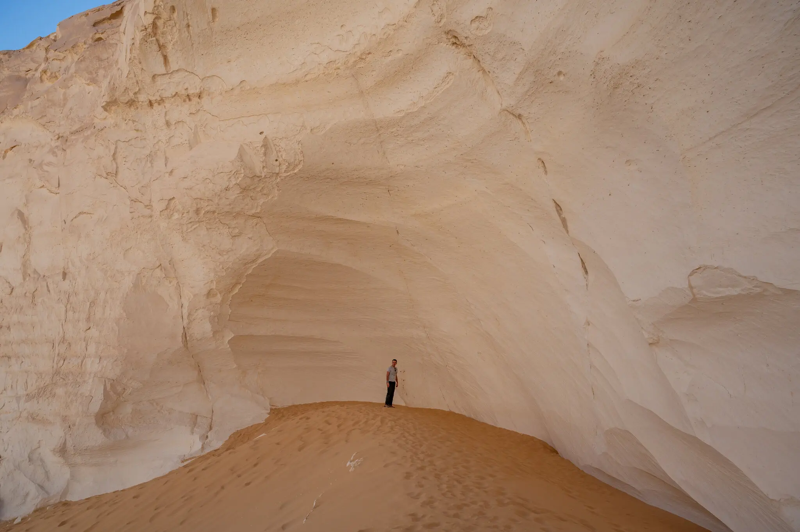
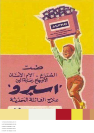

Method
How This Climate & Color Profile Is Built
The interface compares your image choices to three climate-based color systems. Each system is built from posters and surfaces photographed in Brazil (Tropical), Egypt (Arid), and Finland (Polar).
01 Source Imagery & Color Extraction
For each climate, a set of printed artifacts and environments is photographed. A color analysis script samples thousands of pixels per image and records their hue, saturation, brightness, and temperature (warm / cool / neutral). These samples become the cloud of points in the brightness-saturation map.
Raw extraction data snapshot



| Image ID | Climate | Top HEX | Sat % | Bri % | Warm % | Neutral % |
|---|---|---|---|---|---|---|
| BR_014 | Tropical | #385848 | 51.2 | 42.8 | 58.4 | 24.1 |
| EG_032 | Arid | #D8C8B8 | 24.7 | 71.5 | 52.0 | 33.8 |
| FI_021 | Polar | #687858 | 30.9 | 54.2 | 34.6 | 41.9 |
02 Metadata Layer
Each image also carries metadata tags (for example category, product type, and atmosphere). These tags structure questionnaire rounds, support the refinement stage, and organize outputs such as the matrix columns and interpretive comparisons.
03 Questionnaire Rounds + Refinement Grid
In each round you see three images of the same subject — one from each climate. You pick the one you would rather live with. After these rounds, a refinement grid of unseen images lets you make multiple selections. Together, these steps refine your color statistics (saturation, brightness, warm/cool balance, and neutral share).
Top color extraction snapshot
#F8F8F8
#D8C8B8
#284848
#385848
04 Climate Lookup (Koppen API)
After you enter your formative city, the system geocodes that location and queries the Koppen climate API to identify your climate-zone code. That code is mapped to a study band (tropical, arid, or polar) and used as the nature baseline in your results.
The Koppen climate classification is a widely used system that groups regions by long-term temperature and precipitation patterns, using zone codes such as tropical (A), arid (B), temperate (C), continental (D), and polar (E).
05 Matching & Placement
Your combined color samples are compared to the three climate datasets. The system looks for the closest overall distribution in brightness, saturation, and temperature. That closest field becomes your climate match, and your point is placed on the brightness-saturation map using your average values.
Climate match (conceptual)
- Tropical Brazil
- Arid Egypt
- Polar Finland
- Your palette schematic
06 Suggested Palette & Card
Finally, the palette rail blends dominant colors from the matched climate with the center of your own color field. The printed card is a snapshot: climate name, match percentage, and a short reading of how your choices sit within that system.
07 Final Visualization Layer (Scatter + Amplification Matrix)
The final scatter plot places extracted color samples in brightness-saturation space across nature, advertising, and your selected colors. The amplification matrix then compares color-family behavior by poster category, showing where advertising amplifies colors beyond environmental baselines.
Scatter plot snapshot
Amplification matrix snapshot